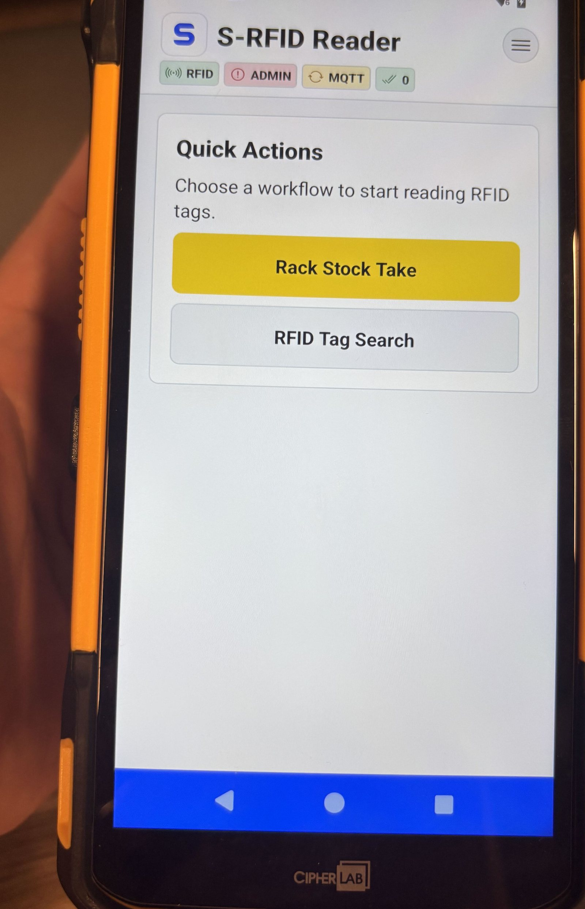
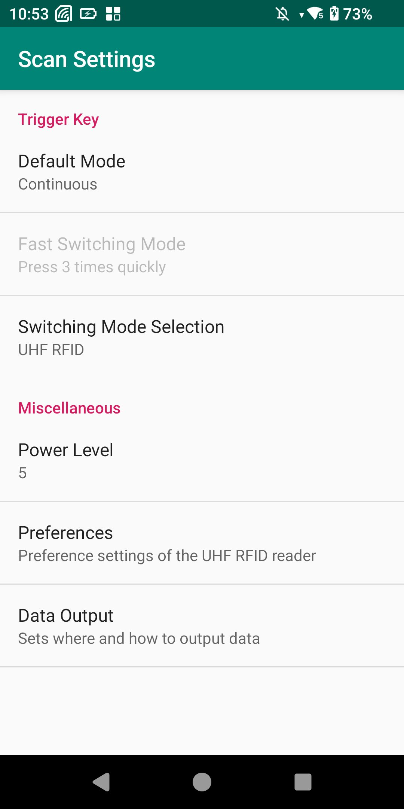
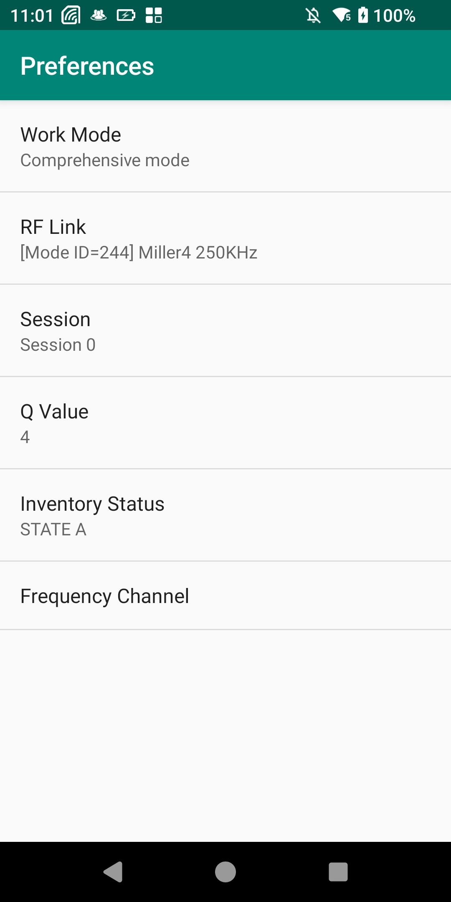

Handheld RFID Scanner
Use the Handheld app for Rack Stock Take, Rack QR lookup and RFID Tag lookup. Settings and Diagnostics support commissioning and recovery.
Home screen and status indicators
Home provides Rack Stock Take, Rack QR Search and RFID Tag Search. Status indicators show RFID reader, Admin API, barcode/QR scanner, MQTT and pending synchronization.

Capture the full S-RFID Reader Home screen with the RFID, API, barcode, MQTT and pending-queue indicators visible.
Application menu
Use the app menu to open Home, RFID Tag Search, Rack QR Search, Device Info, Connection Status, Settings and Diagnostics. Device Info shows Device/Location identity; Connection Status shows API, MQTT, RFID, barcode and sync state.
Capture the menu with all available actions visible.
Capture API, MQTT, RFID, barcode and pending-sync status together.
RFID Tag Search
Use RFID Tag Search when you need to identify a tag without starting a storage transaction.
- Open RFID Tag Search.
- Use the physical RFID trigger to read nearby tags. The screen keeps a recent list and shows the latest scanned tag/time.
- Select Asset Info for a tag to resolve it through the Admin system.
- Review the classification: Asset, Rack or Unknown.
- For an Asset, check Material, Description, Serial Number, Shipment ID, current Location, Rack and Status. For a Rack, check Rack Name and Location.
- Use Clear Results when you want to start a fresh search list.
Capture the scanned-tag list and summary tiles after reading several tags.
Capture the detail dialog for a registered Asset and, if possible, a Rack.
Rack QR Search
Rack QR Search is a lookup tool. It does not itself complete a Stock Take.
- Open Rack QR Search.
- Use the handheld barcode/QR scanner to scan the Rack QR code.
- The screen lists the scanned QR code and scan time.
- Select Rack Info to view the resolved Rack Name, Rack ID, RFID Tag ID and Location.
- If the QR code is not recognized, verify that the Rack exists in Admin Web and regenerate the Rack QR code if necessary.
Capture a successfully scanned Rack QR code in the results list.
Capture the resolved Rack detail dialog including Location.
Rack Stock Take / Storage
Rack Stock Take is the transactional workflow used to place or confirm Assets in a physical Rack. A workflow is tied to the Handheld's configured Location and one selected Shipment ID.
1. Start the workflow and select the Rack
- From Home, select Rack Stock Take, then start the session.
- Scan the target Rack QR code using the barcode/QR scanner. The app can also accept the Rack QR value in the on-screen Rack QR field when required.
- Review the Rack candidate. The app checks the Rack against the Handheld's configured Location.
- If the Location matches, select Confirm Rack. If it does not match, clear the candidate and scan the correct Rack.
Capture the idle Rack Stock Take screen before a session starts.
Capture a resolved Rack candidate, Location check and Confirm Rack action.
2. Select Shipment and scan Assets
- After the Rack is confirmed, wait for the Shipment list to load from the Admin system.
- Select the required Shipment ID. A valid Shipment is required before completion.
- Press and hold the physical RFID trigger to scan Asset tags.
- Review the staged Asset table. Tap an Asset to inspect its details; use the remove action if an Asset should not be submitted.
- Only Assets belonging to the selected Shipment are included in the submit set. Do not mix Shipments in one Stock Take transaction.
- Resolve any blocking issue shown by the app before continuing.
Capture the confirmed Rack, Shipment selector and selected Shipment ID.
Capture the staged Asset table with Tag ID, Shipment ID and Asset Status visible.
3. Complete Storage and wait for confirmation
- When the Rack, Shipment and staged Assets are correct, select Complete Storage.
- The app stops scanning and saves the outbound event in its durable local queue before attempting delivery.
- The workflow enters Awaiting system confirmation. Wait for the central Admin system result before starting another Rack workflow.
- SUCCEEDED confirms acceptance. A matching DUPLICATE response safely confirms the same already-processed request.
- FAILED or PARTIAL keeps the workflow recoverable. Review the message, correct the Asset/configuration issue, then retry.
Capture the pending confirmation state after Complete Storage.
Capture one success result and one FAILED/PARTIAL recovery message if available.
Validation rules users should understand
| Situation | Expected behavior | User action |
|---|---|---|
| Rack belongs to another Location | Rack confirmation is blocked. | Use the correct Rack or correct the Handheld Location in Settings. |
| No Shipment selected | Completion is blocked. | Select a valid Shipment ID. |
| Asset belongs to another Shipment | It is not accepted into the selected Shipment submit set. | Use the correct Shipment workflow. |
| Unknown/unresolved tag while offline | The app can keep the issue visible and block unsafe completion where authoritative resolution is required. | Restore connectivity and resolve the tag. |
| Duplicate RFID read | Reader/service deduplication prevents the same tag from inflating the staged count. | No action unless the physical Asset list is wrong. |
| App restarts during active workflow | A recovery prompt can offer Resume or Discard. | Resume when the physical transaction is still valid; discard only when intentionally abandoning it. |
Capture the Resume / Discard dialog shown after restoring an incomplete Rack workflow.
Handheld Settings
Settings are for authorized site/service personnel. Open Settings and authenticate with the site Settings account. The service shortcut is five taps on the title/logo area within a short interval.
Capture the protected Settings sign-in dialog.
General
| Field | Purpose | Guidance |
|---|---|---|
| Device ID | Logical identity used by API/MQTT and the central system. | Must match the Handheld Scanner Device record in Admin Web. |
| Language | Handheld UI language. | Select the language used by the site team. |
Capture Device ID and Language fields.
Device Location
Select Load/Choose Location and choose the real warehouse/area from the Locations returned by the Admin API. The selected Location is used for Rack validation and event context.
Capture the current Location and loaded Location selector.
Remote API
These settings connect the Handheld to the central Admin system. Use Test API Connection after changes.
| Setting | Meaning |
|---|---|
| Base URL | Address of the central Admin API. |
| Health Path | Endpoint used by the app to verify that the Admin service is reachable. |
| Locations / Assets / Racks Paths | REST endpoints used for Location loading and tag/Rack resolution. |
| Device Login / Refresh Paths | Endpoints used for technical device authentication. |
| Timeout / Retry Count | How long the app waits and how many retry attempts it allows for API calls. |
| Technical Credential Required | Whether device authentication is required. |
| Device Login Password | Technical credential paired with the Admin Device identity. |
Capture the API fields and Test API Connection result.
MQTT
MQTT carries RFID observations and the system result for Rack Stock Take. Use Test MQTT Connection after changes.
| Setting | Purpose / expected value |
|---|---|
| Protocol / TLS | Select the broker transport approved by the deployment: ws/wss/mqtt/mqtts. |
| Broker Host / Port | Address and port of the MQTT broker reachable by the handheld Wi-Fi network. |
| Username / Password | Broker credentials where required. |
| Client ID | MQTT client identity. Keep it unique per deployed handheld. |
| Keep Alive / Clean Session | Connection/session behavior. |
| QoS | Use 1 for the RFID event contract unless the deployment explicitly changes the contract. |
| RFID Observation Topic | p4/rfid/v1/{deviceId}/events |
| Handheld Result Topic | p4/handheld/v1/{deviceId}/responses |
| Connection Timeout / Reconnect | Controls connection test/recovery and minimum/maximum reconnect delay. |
Capture broker/TLS/QoS/topic/reconnect fields and the MQTT connection test.
RFID & Offline Sync
| Setting | Purpose |
|---|---|
| RFID Duplicate Read Window | Suppresses repeated reads of the same EPC within a short time window. |
| Automatic Sync | Automatically drains queued operations when connectivity permits. |
| Sync Batch Size | Maximum queued records processed in one synchronization batch. |
| Periodic Retry Interval | How often pending work is retried. |
| Stale Publishing Recovery | Recovers events left in an in-progress state after interruption/restart. |
| Max Retry Delay / Retry Limit | Bounds backoff and total retry attempts. |
| Max Queue Size | Safety capacity of the local Outbox. |
| Queue / Published-History Retention | How long queued/history records remain in local storage. |
Capture duplicate-read and Outbox synchronization settings.
Reference Cache
The Handheld caches Location, Rack, Asset and unknown-tag lookups for short communication interruptions. Use Reference Cache settings to control cache lifetime and stale-display grace.
Capture Location/Rack/Asset/Unknown Tag TTL and stale-display grace settings.
Access and Service Tools
Access allows an authorized service user to change the protected Settings password. Service Tools opens Diagnostics.
Capture password-change fields and Open Diagnostics action without exposing a real password.
Diagnostics and connection testing
Diagnostics is the main support screen when the Handheld cannot scan, resolve data or synchronize. It shows:
- Admin API status, URL, last successful request, last health check and last error.
- MQTT state, broker endpoint, last connection/publish/disconnect and last error.
- App/build, Device ID and configured Location.
- RFID reader state, scan state and current scan mode.
- Barcode scanner state/listening state.
- Outbox/sync state, pending/publishing/retryable/permanent counts and recent retry reason.
- SQLite database health, migration version and table count.
Available service actions include Test RFID, Test API, Test MQTT and Retry Sync.
Capture the connectivity overview, Outbox/Sync status and the four service-test buttons.
Configure the handheld RFID hardware
Use the approved vendor RFID utility to configure trigger mode, RF power, filters, session/inventory behavior and frequency. Match the site's read-zone requirements and avoid filters that hide valid EPCs.


Offline and restart behavior
- Business observations are persisted in the local Outbox before publication.
- If MQTT is unavailable, pending work remains queued and automatic sync retries when connectivity is restored.
- Restarting the app can restore an incomplete Rack workflow and pending Outbox work.
- MQTT delivery alone does not complete Storage; final success comes from the central operation-result response.
- Do not create a replacement transaction while the original transaction is still awaiting authoritative confirmation.